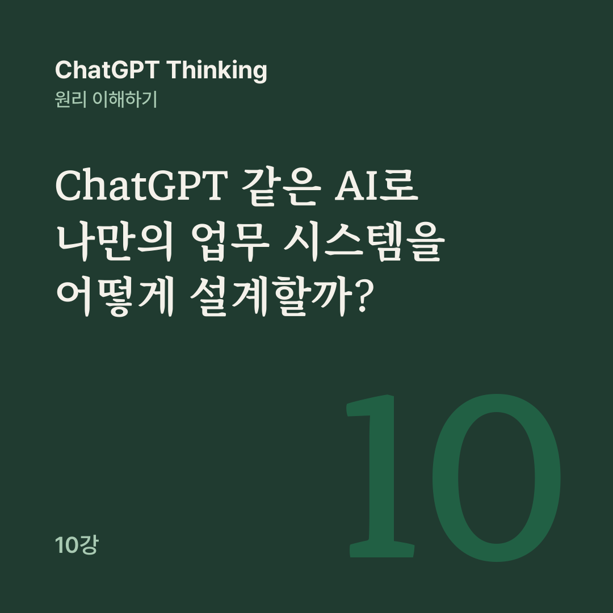

AI 원리 노트 · ChatGPT Thinking 10강
AI가 잘할 수 있는 일과 틀릴 수 있는 일을 구분하고, 사람의 목표와 통제 아래 실제 문제를 해결하는 시스템을 어떻게 설계할까?
지금까지 배운 것은 개별 AI의 능력이었습니다. 10강은 1~9강을 종합하는 실전편으로, 그동안 배운 기능을 하나로 연결해 나만의 AI 업무 시스템을 설계합니다.
AI가 좋은 답변을 만드는 것에서 끝나지 않는다면, 무엇을 더 확인해야 할까요?
AI 업무 시스템의 기본 구조는 목표 설정과 프롬프트에서 출발합니다. 이어서 AI 모델과 Thinking, 도구와 싱글·멀티 에이전트, 검증과 사람의 승인을 거쳐 실제 업무 성과 확인에 이릅니다.
온라인 쇼핑몰을 운영한다고 가정해 보겠습니다. 매주 고객 문의가 100건 들어오고, 직원은 모든 문의를 읽은 뒤 배송, 환불, 제품 오류 등으로 분류해 보고서를 씁니다. 이 작업을 AI에게 위임하려고 합니다. 프로젝트 목표는 다음과 같습니다.
고객 문의를 자동으로 분류하고, 반복적으로 발생하는 문제를 찾아 담당자가 개선 우선순위를 결정하도록 돕는다.
성공 기준도 함께 세웁니다. 문의 누락 없이 유형별 건수가 정확하고, 분류 오류를 측정할 수 있어야 합니다. 주요 분석 결과에는 원본 근거가 있고, 담당자가 그 결과를 확인하고 승인할 수 있어야 합니다.
여기서 목표는 보고서 하나를 만드는 것이 아닙니다. 고객 문제를 더 빨리 발견하고 정확하게 대응하는 것입니다.
고객 문의 데이터는 승인된 도구가 읽고, 문의의 의미를 파악해 분류하는 일과 개선 방안 초안을 쓰는 일은 AI가 맡습니다. 복잡한 문의 분석은 Thinking이, 유형별 건수 계산은 프로그램이나 계산 도구가 합니다.
보고서의 근거 검증은 검증 도구와 사람이 함께 맡고, 개선 우선순위는 사람이 확정합니다. 고객에게 실제로 발송하는 일은 명시적인 승인을 받은 뒤에 실행합니다.
AI가 잘하는 일, 프로그램이 더 정확한 일, 사람이 책임져야 할 일을 구분해야 합니다. 100건의 문의를 유형별로 분류하는 일은 AI가 도울 수 있습니다. 그러나 100건이 모두 처리되었는지 계산하는 일은 프로그램이 더 일관되게 확인할 수 있습니다.
처음부터 전문 AI를 다섯 명씩 만들 필요는 없습니다. ‘고객 문의 분석 AI’ 하나가 자료 읽기, 건수 계산, 보고서 작성 도구를 사용합니다.
나중에 문의가 많아지고 분석이 복잡해지면 분류 AI, 분석 AI, 검증 AI로 나누는 것을 고려할 수 있습니다. 멀티 에이전트는 문제의 복잡성에 따라 선택하는 확장 방법입니다.
첫 단계에서는 권한이 확인된 고객 문의 자료만 읽습니다. 중복과 누락을 점검한 뒤 AI가 배송, 환불, 계정, 제품 기능 등으로 분류하고, 여러 유형에 해당하거나 모호한 문의는 따로 표시합니다.
이어서 문의 건수와 유형별 합계를 계산해 원본 ID와 대조합니다. Thinking으로 반복 문제의 원인과 개선 방향을 검토할 때는 확인된 사실과 가설을 구별합니다. 보고서가 나오면 사람이 검토하고, 실제 업무 개선에 활용할지 결정합니다.
AI가 만든 보고서는 믿어도 될까요? 실제 고객 정보가 아닌 교육용 가상 문의 8건으로 따져 봅니다. ‘배송이 늦어요’, ‘환불해 주세요’, ‘앱에서 오류가 나요’, ‘로그인이 안 돼요’ 같은 문의입니다.
올바르게 분류하면 배송 3건, 환불 2건, 계정 2건, 제품 기능 1건입니다. 그런데 AI가 배송 4건, 계정 1건이라고 보고해도 전체 합계는 여전히 8건입니다. 합계가 맞는다고 분류까지 올바른 것은 아닙니다. 따라서 검증에는 최소 두 가지가 필요합니다.
전체 처리 건수가 원본과 일치하는가? 각 문의의 분류가 올바른가?
나아가 보고서의 결론이 원본 자료로 뒷받침되는지도 확인해야 합니다.
AI 업무 시스템은 무엇을 할 수 있는지 명확히 정해야 합니다. 승인된 문의 자료를 읽고, 문의를 분류해 초안을 쓰고, 분석용 건수를 계산하는 일은 허용합니다.
공유 문서를 바꾸거나 고객에게 이메일을 보내는 일에는 승인이 필요합니다. 원본 고객 데이터를 삭제하는 일은 기본적으로 금지합니다.
승인 없이 실행하지 마.
프롬프트에 이렇게 적는 것만으로 충분하지는 않습니다. 실제 시스템에서도 해당 작업을 실행할 수 있는 계정 권한과 승인 절차를 제한해야 합니다.
처음부터 전체 고객 문의를 자동으로 처리하면 오류의 영향을 파악하기 어렵습니다. 그래서 시험 운영을 권장합니다.
먼저 가상 데이터 8건으로 기본 동작을 확인하고, 정답을 확정한 시험 데이터로 정확도를 측정합니다. 그다음 허용된 실제 자료에 제한적으로 적용하되 사람의 검토를 유지하고, 검증된 작업부터 자동화 범위를 넓힙니다.
오류가 발견되면 단순히 Thinking 시간을 늘리기보다 어느 단계에서 문제가 발생했는지 찾아야 합니다. 복합적인 고객 문의를 하나의 유형으로만 분류하도록 설계했다면, 모델보다 분류 체계 자체를 수정해야 할 수 있습니다.
핵심은 실제 업무 목표를 달성했는지 확인하는 것입니다.
이렇게 고객 문의 분석 시스템 하나를 설계했습니다. 여기서 사람은 권한을 정하고, 중요한 내용을 승인하고, 최종 판단을 맡습니다. 아직 실제 프로그램을 구축하거나 고객 데이터를 처리한 것은 아닙니다.
1강에서 출발한 질문은 ‘ChatGPT가 어떻게 생각할까?’였습니다. 10강에 이르러 그 질문은 사람의 목표와 통제 아래 실제 문제를 해결하는 시스템을 어떻게 설계할 것인가로 발전했습니다.
이제 다음 단계는 설계한 시스템이 실제로 얼마나 잘 작동하는지 측정하는 것입니다. 11강은 AI 업무 시스템의 성과와 비용, 오류 관리를 다룹니다.
공개 대화의 10강을 블로그용으로 다시 편집했습니다.
